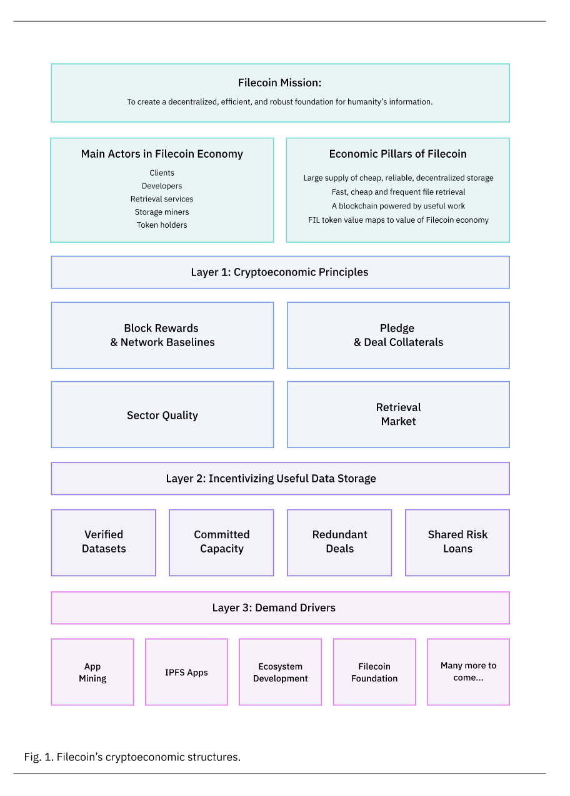

Filecoin's cryptoeconomic constructions
Public blockchains rely on a combination of cryptography and incentive structures that make a system work without centralized control. Cryptography makes some harmful actions practically impossible, while game theory discourages others. Analysis that focuses on this set of mechanisms is called cryptoeconomics. A properly-structured cryptoeconomic system can determine whether a network becomes valuable and self-sustaining or struggles to get off the ground.
Filecoin’s mission is to create a decentralized, efficient and robust foundation for humanity’s information. To advance that mission, we’ve created a decentralized storage network that lets anyone in the world store or retrieve files. We hope Filecoin will make storage cheaper and more reliable by helping small players compete directly with well-known centralized services, providing a common interface for providers of all sizes, and greatly reducing migration and transaction costs.
Today, we’re pleased to provide an overview of the cryptoeconomic structures that will allow Filecoin to create that foundation. Filecoin uses a combination of existing cryptoeconomic structures and many new ones to meet the network’s unique requirements. If you’re interested in Filecoin’s long-term success as a storage marketplace, you should find these mechanisms encouraging. While we’re still conducting extensive testing to finalize parameters, we’re excited to share these details on how the system works.

An overview of Filecoin’s economy
There are five main actors in the Filecoin economy:
- Clients, who store and retrieve data via applications.
- Developers, who develop applications on top of the protocol.
- Retrieval services, which deliver files to clients on demand.
- Storage miners, who store files and help maintain and update the Filecoin blockchain.
- Token holders, who make Filecoin a viable currency by using it as a store of value and as a medium of exchange.
Clients’ role in the Filecoin economy is straightforward, but critical: they use Filecoin tokens to pay for the storage and retrieval of files. Filecoin’s cryptoeconomic mechanisms are ultimately intended to support clients’ file storage and retrieval needs.
Developers are a bridge between clients and the Filecoin network. They build applications to improve clients’ access to Filecoin’s storage and retrieval markets.
Retrieval services serve as a content delivery network or caching layer to make sure files stored on Filecoin are efficiently available. Clients can use payment channels to pay for retrieval in tiny increments.
Storage miners earn Filecoin for their services in three main ways:
- Deal fees, which are direct payments from clients for storing data over time.
- Block rewards, which are payments made to storage miners by the Filecoin protocol in exchange for participation in Filecoin consensus (the process of maintaining and updating the blockchain) and providing reliable long-term storage.
- Network message transaction fees, which let users encourage miners to prioritize their transactions.
Most of Filecoin’s cryptoeconomic constructions are intended to ensure that storage miners, and the Filecoin network itself, can reliably and sustainably meet clients’ needs.
Token holders provide a bridge between the Filecoin economy and other markets. They provide liquidity for miners and clients and make it easier to build real-world businesses on Filecoin.
Cryptoeconomic Principles
Block reward basics
Filecoin storage miners receive block rewards based on their storage power. Storage power is a measurement of how much useful storage a Filecoin storage miner is providing to the network. At a high level, miners gain storage power by accepting clients’ files, publicly promising to store them for some duration, and repeatedly proving that they’re actually storing them over time.
Economically, you can think of storage power like hash rate in a proof of work blockchain like Bitcoin. A miner receives block rewards in proportion to her storage power against the total storage power provided by all miners. For example, a miner maintaining 1 PiB of storage power against a total network size of 100 PiB would, on average, win one percent of block rewards over time.
Unique Filecoin innovations on block rewards
Filecoin needs to be a reliable and sustainable protocol over long timeframes. In a traditional proof-of-work blockchain, it doesn’t matter much if a given miner goes offline for a short time (or forever), since any miner can fungibly add new blocks to the chain. Filecoin miners also provide non-fungible useful services to their clients, so clients need strong guarantees that each storage miner will continue operating. Filecoin therefore includes many mechanisms to make great quality of service an economically rational choice for storage miners, and to encourage storage miners to promote the long-term health of the network.
Network baselines
Many blockchains reward tokens based on a simple exponential decay model. Under this model, block rewards are highest in the beginning, and miner participation is the lowest, so mining generates many tokens per unit of work early in the network’s life, then rapidly tails off.
Over many cryptoeconomic simulations, it became clear that the simple exponential decay model would encourage unhealthy short-term behavior around network launch. Specifically, it would push storage miners towards over-invest in hardware for the sealing stage of mining to onboard storage as quickly as possible. Because Filecoin rewarded per unit of storage power would have been so much larger in the very early days of the network, we predicted that it would be profitable to exit the network after exhausting these early rewards, even if it resulted in losing client data. This would harm the network: clients would lose data and have less access to long-term storage, and miners would have few incentives to contribute to improving the network.
To encourage consistent storage onboarding and investment in long-term storage, not just rapid sealing, Filecoin introduces the concept of a network baseline. Instead of minting tokens based purely on elapsed time, block rewards instead scale up as total storage power on the network increases. This preserves the shape of the original exponential decay model, but softens it in the earliest days of the network. Once the network reaches a baseline, the cumulative block reward issued is identical to a simple exponential decay model, but at small network sizes, a portion of block rewards are deferred. The overall result is that Filecoin rewards to miners more closely match the utility they, and the network as a whole, provide to clients.
Block rewards as collateral
Storage miners add new data to the network in fixed amounts called sectors. When a storage miner adds a sector, she commits to storing it for a certain duration. This gives clients more certainty that stored data will be available for as long as it’s required.
Under certain circumstances, miners might agree to a storage deal, then want to abandon it later as a result of increased costs or other market dynamics. Clients need reliable storage. A system where storage miners can freely or cheaply abandon files would drive clients away from Filecoin as a result of serious data loss and low quality of service.
Filecoin miners work as partners with clients in a two-sided data marketplace. To make sure all the incentives in that partnership are correctly aligned, Filecoin penalizes miners that fail to store files for the promised duration. This penalty is enforced against a pool of Filecoin collateral called locked funds that each storage miner provides. Locked funds consist of a small up-front amount of FIL, plus a chunk of tokens taken from the block rewards earned by the miner.
If a miner goes offline for a day, she would lose a little from her locked funds; if the miner completely stops proving storage of the file, she could lose it all. If the miner successfully completes the full term of a storage contract, she can reclaim the full locked funds after a short lock-up period.
Using block rewards to collateralize miners is another improvement gained from our cryptoeconomic simulations. Early models required miners to provide substantial up-front collateral for all their storage. However, this would have created a shortage of Filecoin around launch, when the total supply of tokens will be low and many miners will be attempting to join the network. By transferring some up-front costs to later block rewards, we were able to decrease the cost of entry for miners.
Aligning incentives for useful data storage
Filecoin clients and storage miners operate in a dynamic system. At any given time, it’s unlikely that the demand for storage will exactly match supply. Early Filecoin constructions forced storage miners to choose between two bad options: waiting for client deals to arrive (meaning miners’ hardware would sit idle), or storing non-useful data in pursuit of block rewards (which decreases the network’s ability to store useful data). Filecoin introduces several mechanisms to ensure that miners who store client’s data are also maximizing the tokens they earn.
Committed Capacity
When a miner finds herself with no client data to store, she doesn’t have to let her hardware sit idle because of Filecoin’s committed capacity sectors, proven but empty sectors demonstrating that the miner is ready to provide storage to clients. Committed capacity sectors verify that the miner has space available for client data, but can be upgraded to store client data at any time. This mechanism mitigates the miners’ need to choose between block rewards and client data – she can store committed capacity sectors right away to begin earning block rewards, then upgrade them at any time to store client data in exchange for deal fees.
Verified Datasets
Committed capacity sectors improve miners’ incentives to store client data, but they don’t solve the problem entirely. Storing real client files adds some operational overhead for storage miners. In certain circumstances – for example, if a miner values block rewards far more than deal fees – miners might still choose to ignore client data entirely and simply store their own self-generated data to increase their storage power as rapidly as possible in pursuit of block rewards. This would make Filecoin less useful and limit clients’ ability to store data on the network.
Filecoin addresses this issue by introducing the concept of verified data. Sectors with verified data are awarded more storage power – and therefore more block rewards – than sectors without. This provides storage miners with an additional incentive to store client data.
Verified data is data stored by verified clients, who in turn are certified by a decentralized network of verifiers. Verification is not intended to be scarce – it’s very easy to acquire for anyone with real data to store on Filecoin. Even though verifiers may allocate verified data permissively to make onboarding easier, the overall effect should be to dramatically increase the proportion of useful data stored on Filecoin.
Demand Drivers
A decentralized storage network that lets anyone in the world store or retrieve files is an amazing tool. However, the Filecoin network is only useful to the world if there are applications built on top of it. The good news is that there are already many amazing applications already being built on Filecoin, with even more to come between now and mainnet launch.
Reliability
Filecoin is set up from day one to store the world’s most important data reliably and efficiently. To enhance reliability, the protocol gives clients unlimited flexibility to store redundant copies of files with different miners, and to verify that unique copies are actually being stored. Unlike centralized cloud storage services, which back up data in ways clients can’t change or verify, Filecoin allows clients to easily express their own preferences for reliability and cost.
Efficiency
Filecoin’s offline data transfer mechanism is another example of the protocol’s support for diverse client needs. Many datasets are so large that transferring them over the internet is slow and expensive. For example, if you stored the 2.5 petabyte Landsat 8 open source geoimaging dataset on a centralized cloud, transferring it over the internet would take more than seven months on a dedicated gigabit line and cost $125,000. Filecoin’s offline deal protocol allows you to store your large data on hard drives, ship the drives to miners, and then continuously verify that the files are being safely stored.
As Filecoin’s mainnet launch approaches, you can expect to hear much more about applications that are already using the network’s unique features to store huge quantities of critical data.
A solid foundation for Filecoin’s mainnet launch
Filecoin’s cryptoeconomics are designed to ensure that the network can support the long-term needs of its clients. After thousands of hours of discussion, modeling, and experiments, we’re confident that these mechanisms will provide a solid foundation for Filecoin’s mainnet launch. The final result of these efforts, along with the incredible work of Filecoin’s research and engineering teams, will be a public blockchain powered by useful work, a reliable cloud storage service, and a thriving decentralized economy.
Over the coming weeks, we’ll be conducting our final rounds of simulation and modeling to determine final cryptoeconomic parameters. We look forward to independent analyses from other groups, and to the community’s contributions to make the Filecoin network even more useful and valuable for the world.